📊 BÁO CÁO PHÂN TÍCH DỮ LIỆU – SUPERSTORE
Data Analytics Final Project
Generated automatically by Analytics Pipeline
PHẦN 1 – KHÁM PHÁ DỮ LIỆU
1.1 Kích thước dữ liệu
| Thuộc tính | Giá trị |
|---|---|
| Tổng số dòng | 9994 |
| Tổng số cột | 21 |
🔍 Nhận xét
Bộ dữ liệu có 9,994 dòng và 21 cột, kích thước đủ lớn, đảm bảo yêu cầu đề bài, và phù hợp để phân tích và trực quan hóa.
1.2 Thông tin cột dữ liệu
| Tên cột | Kiểu dữ liệu |
|---|---|
| Row ID | int64 |
| Order ID | object |
| Order Date | object |
| Ship Date | object |
| Ship Mode | object |
| Customer ID | object |
| Customer Name | object |
| Segment | object |
| Country | object |
| City | object |
| State | object |
| Postal Code | int64 |
| Region | object |
| Product ID | object |
| Category | object |
| Sub-Category | object |
| Product Name | object |
| Sales | float64 |
| Quantity | int64 |
| Discount | float64 |
| Profit | float64 |
🔍 Nhận xét
Cụ thể, bộ dữ liệu gồm 21 cột, trong đó 15 cột có kiểu dữ liệu object, 3 cột có kiểu dữ liệu int64, 3 cột có kiểu dữ liệu float64.
1.3 Giá trị thiếu & trùng lặp
🔍 Nhận xét
Bộ dữ liệu không nào có giá trị thiếu, không có bản ghi trùng lặp.
1.4 Thống kê cơ bản
| Cột | count | mean | std | min | 25% | 50% | 75% | max |
|---|---|---|---|---|---|---|---|---|
| Sales | 9994.00 | 229.86 | 623.25 | 0.44 | 17.28 | 54.49 | 209.94 | 22638.48 |
| Quantity | 9994.00 | 3.79 | 2.23 | 1.00 | 2.00 | 3.00 | 5.00 | 14.00 |
| Discount | 9994.00 | 0.16 | 0.21 | 0.00 | 0.00 | 0.20 | 0.20 | 0.80 |
| Profit | 9994.00 | 28.66 | 234.26 | -6599.98 | 1.73 | 8.67 | 29.36 | 8399.98 |
1.5 Tương quan & phân phối
a. Phân phối doanh số
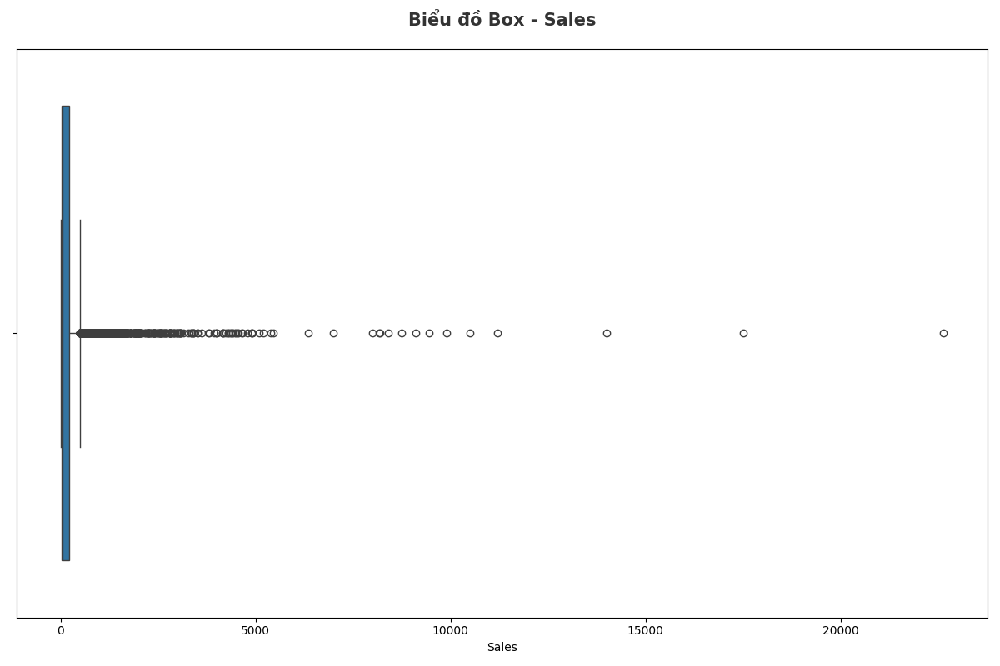
b. Phân phối lợi nhuận
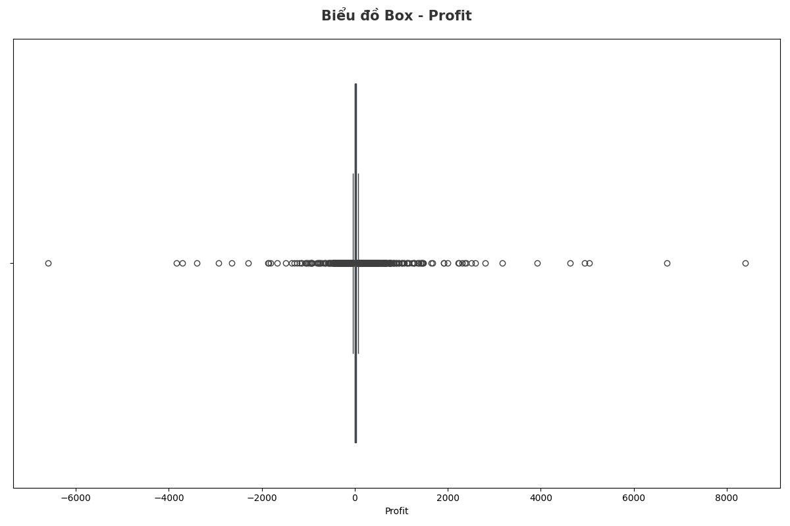
c. Phân phối doanh số và lợi nhuận
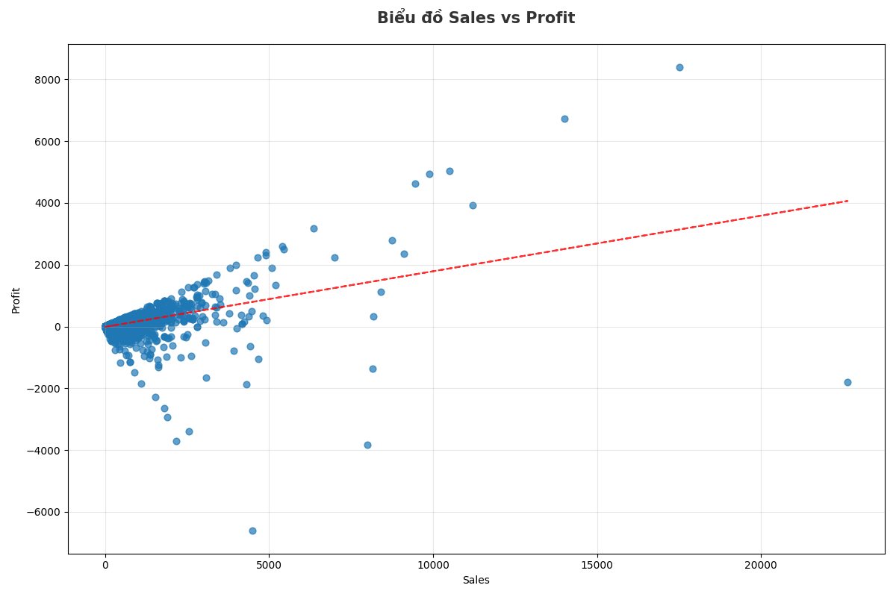
d. Phân phối doanh số
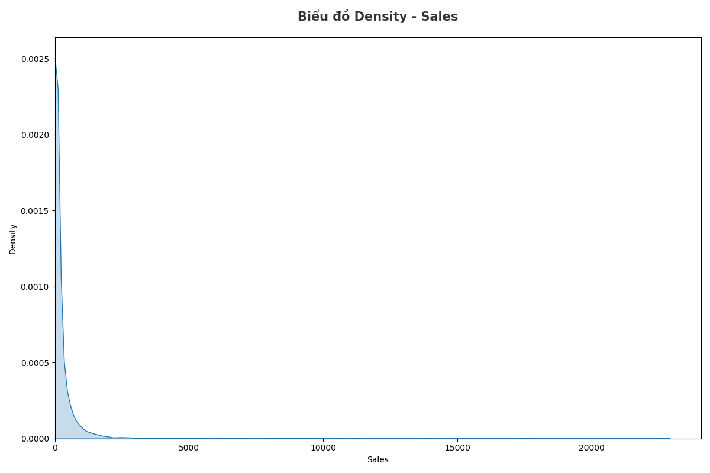
e. Phân phối lợi nhuận
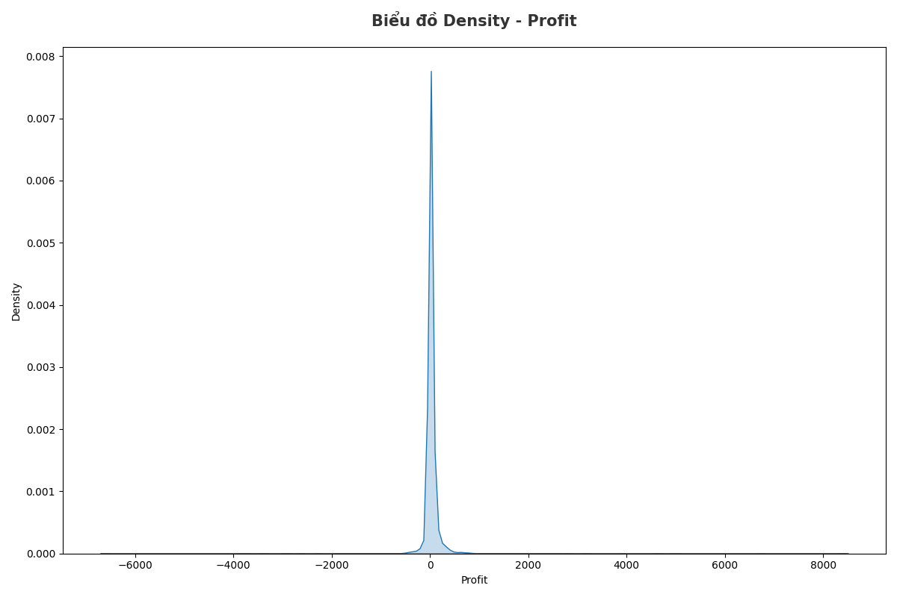
1.6 Giá trị ngoại lai
| Cột | Số giá trị ngoại lai |
|---|---|
| Sales | 1167 |
| Quantity | 170 |
| Discount | 856 |
| Profit | 1881 |
🔍 Nhận xét
Bộ dữ liệu có 9,994 dòng và 21 cột. Cụ thể, bộ dữ liệu gồm 21 cột, trong đó 15 cột có kiểu dữ liệu object, 3 cột có kiểu dữ liệu int64, 3 cột có kiểu dữ liệu float64. Bộ dữ liệu không nào có giá trị thiếu, không có bản ghi trùng lặp. Có các giá trị ngoại lai được phát hiện trong các cột numeric. Phân phối của các biến số Sales, Profit được trực quan hóa thông qua các biểu đồ tương ứng, trong đó có thể thấy rằng cột Profit có nhiều giá trị âm và dương phân tán xa nhau. Điều này có thể do các đơn hàng có lợi nhuận âm do chiết khấu, khuyến mãi, hoặc chi phí giao hàng quá cao ... Có những giá trị ngoại lai nhưng chưa đủ căn cứ để loại bỏ. Tóm lại, bộ dữ liệu này có thể sử dụng để tiến hành các phân tích tiếp theo.
PHẦN 2 – PHÂN TÍCH MÔ TẢ
2.1 Tổng quan kinh doanh
Báo cáo cung cấp cái nhìn tổng thể về hiệu quả kinh doanh, với tổng doanh thu đạt 1,401,969 và tổng lợi nhuận 160,584, tương ứng tỷ suất lợi nhuận bình quân 11.45%. Một số danh mục con kinh doanh ghi nhận lợi nhuận âm, cho thấy tồn tại rủi ro về hiệu quả và cần được ưu tiên theo dõi trong công tác quản lý và ra quyết định.
- Tổng doanh thu: 1,401,969
- Tổng lợi nhuận: 160,584
- Tỷ suất lợi nhuận bình quân: 11.45%
- Danh mục con có lợi nhuận âm: Tables
2.2 Tổng quan doanh số
2.3 Xu hướng doanh số và lợi nhuận
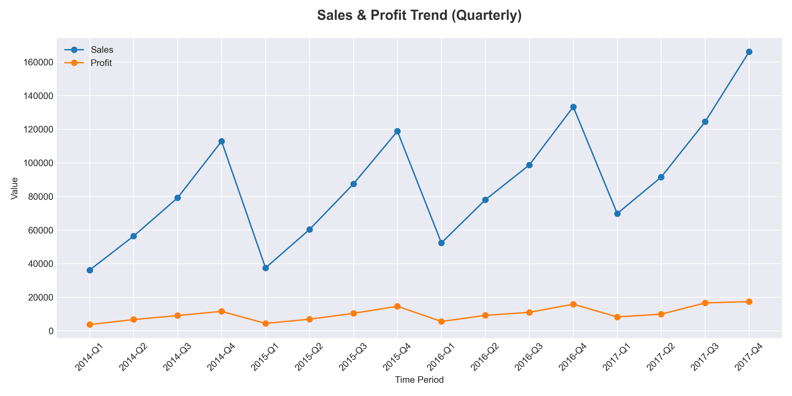
🔍 Nhận xét
| Năm/Quý | Doanh số | Lợi nhuận |
|---|---|---|
| 2014-Q1 | 36122.26 | 3688.73 |
| 2014-Q2 | 56336.89 | 6666.2 |
| 2014-Q3 | 79101.58 | 9056.09 |
| 2014-Q4 | 112789.49 | 11532.78 |
| 2015-Q1 | 37395.26 | 4362.28 |
| 2015-Q2 | 60263.09 | 6876.58 |
| 2015-Q3 | 87414.94 | 10374.71 |
| 2015-Q4 | 118748.61 | 14559.28 |
| 2016-Q1 | 52281.81 | 5519.44 |
| 2016-Q2 | 77943.44 | 9163.05 |
| 2016-Q3 | 98647.61 | 10964.25 |
| 2016-Q4 | 133270.91 | 15805.08 |
| 2017-Q1 | 69751.26 | 8227.16 |
| 2017-Q2 | 91455.81 | 9873.1 |
| 2017-Q3 | 124408.56 | 16573.85 |
| 2017-Q4 | 166037.82 | 17341.14 |
2.5 Phân tích theo danh mục & khu vực
a. Top Danh mục bán hàng tốt
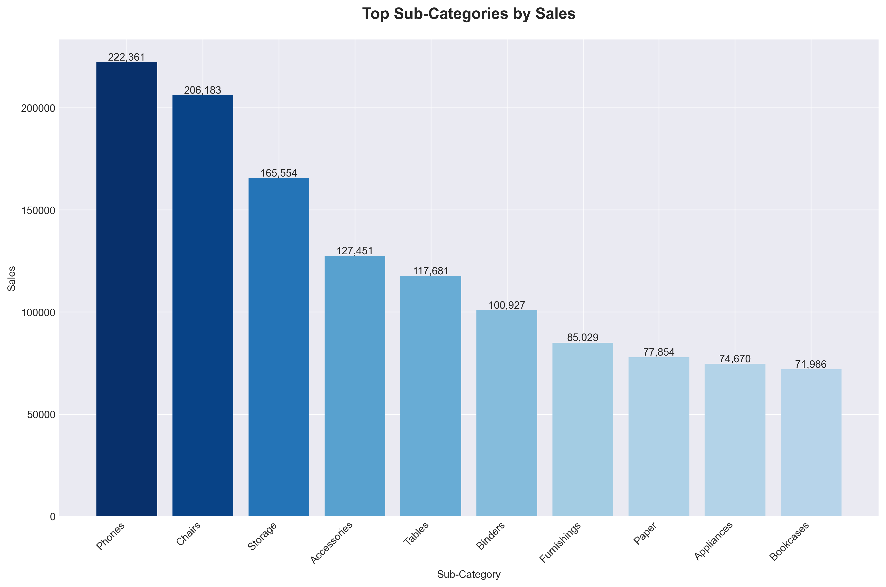
Biểu đồ thể hiện top danh mục có doanh thu cao nhất, trong đó Phones dẫn đầu với tổng sales đạt 222,361. Ngược lại, Bookcases có sales thấp nhất với 71,986. Danh mục đầu bảng có doanh thu gấp 3.09 lần so với danh mục cuối bảng.
b. Lợi nhuận theo danh mục
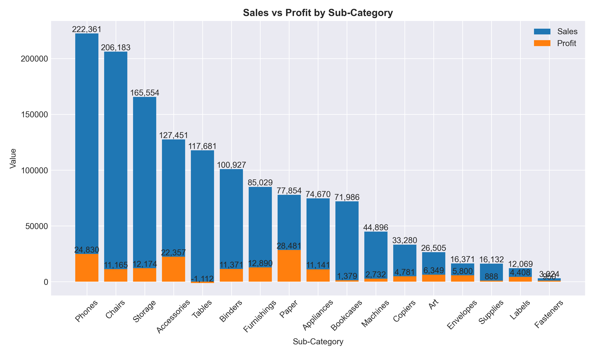
| Danh mục con | Doanh số | Lợi nhuận | Biên lợi nhuận (%) |
|---|---|---|---|
| Phones | 222360.84 | 24829.55 | 11.17 |
| Chairs | 206182.58 | 11164.52 | 5.41 |
| Storage | 165554.02 | 12174.31 | 7.35 |
| Accessories | 127450.85 | 22357.13 | 17.54 |
| Tables | 117680.83 | -1111.59 | -0.94 |
| Binders | 100926.62 | 11371.36 | 11.27 |
| Furnishings | 85028.98 | 12889.57 | 15.16 |
| Paper | 77853.68 | 28480.99 | 36.58 |
| Appliances | 74669.78 | 11141.3 | 14.92 |
| Bookcases | 71985.62 | 1378.89 | 1.92 |
| Machines | 44895.77 | 2732.09 | 6.09 |
| Copiers | 33279.89 | 4781.45 | 14.37 |
| Art | 26504.7 | 6349.09 | 23.95 |
| Envelopes | 16370.68 | 5799.76 | 35.43 |
| Supplies | 16131.75 | 888.02 | 5.5 |
| Labels | 12068.51 | 4407.77 | 36.52 |
| Fasteners | 3024.28 | 949.52 | 31.4 |
c. Biểu đồ biên lợi nhuận theo danh mục con
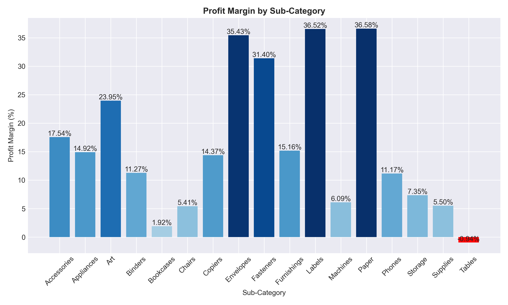
d. Top thành phố theo doanh số
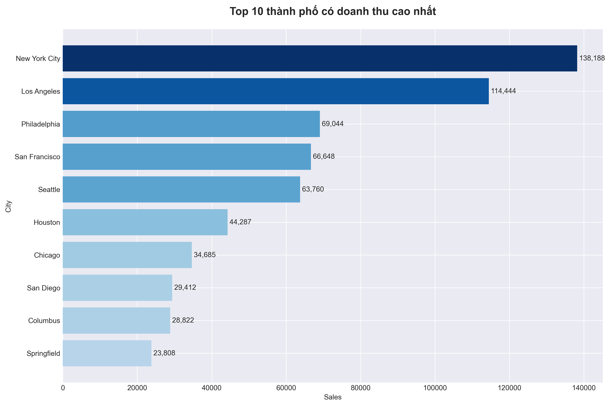
e. Bottom thành phố theo doanh số
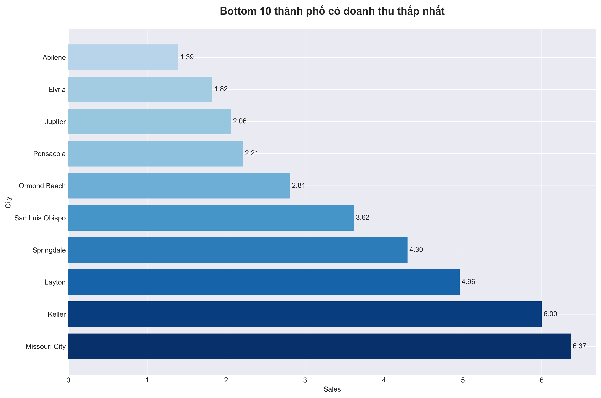
🔍 Key Insights/Phát hiện then chốt
- Giá trị đơn hàng trung bình (AOV) đạt 280. Đây là chỉ số then chốt để theo dõi hiệu quả bán chéo (cross-selling).
- Dữ liệu cho thấy sự lệch pha lớn giữa doanh thu và lợi nhuận vào các kỳ cao điểm (Quý 4).
- CẢNH BÁO: Danh mục con [Tables] đang trong tình trạng 'bán lỗ', gây thâm hụt lợi nhuận chung.
- Danh mục con 'Phones' là động lực tăng trưởng chính, đóng góp tỷ trọng lớn nhất vào cả doanh thu và lợi nhuận.
- Hoạt động kinh doanh đang tập trung quá mức vào một số thành phố trọng điểm, tạo ra rủi ro phụ thuộc thị trường.
🎯 Recommendations/Khuyến nghị
- Áp dụng chiến lược 'Lợi nhuận mục tiêu' cho các chương trình khuyến mãi cuối năm để tránh tình trạng tăng doanh thu nhưng giảm hiệu quả lợi nhuận.
- Tạm dừng các chương trình giảm giá sâu cho nhóm Tables và đánh giá lại danh mục hàng hóa (Inventory Audit).
- Tăng ngân sách marketing cho danh mục con 'Phones' để chiếm lĩnh thêm thị phần.
- Nghiên cứu mô hình thành công ở các thành phố Top đầu để nhân rộng (Scale-up) sang các khu vực có tiềm năng nhưng doanh số còn thấp.
- Xây dựng hệ thống KPI tập trung vào 'Lợi nhuận trên mỗi đơn hàng' thay vì chỉ tập trung vào 'Doanh số thuần'.
PHẦN 3 – PHÂN TÍCH CHẨN ĐOÁN
3.1 Ma trận tương quan
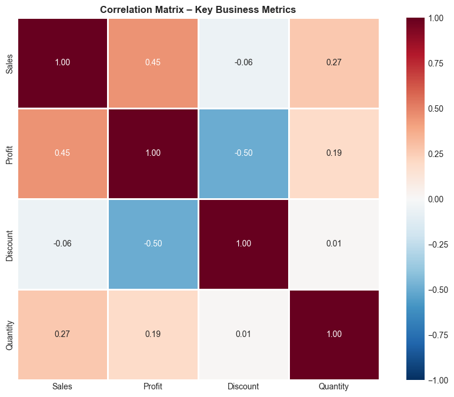
3.2 Doanh số và Lợi nhuận
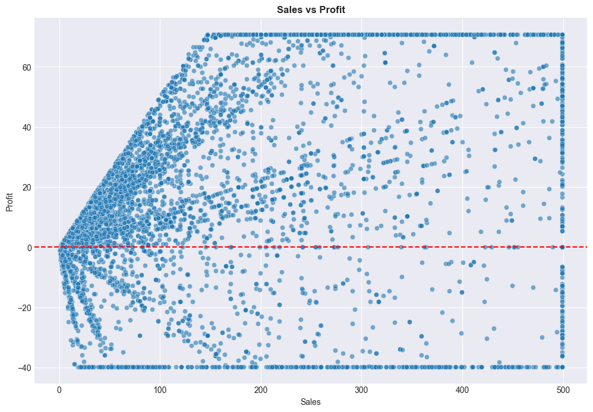
3.3 Phân tích Pareto – Danh mục con ảnh hưởng đến lợi nhuận
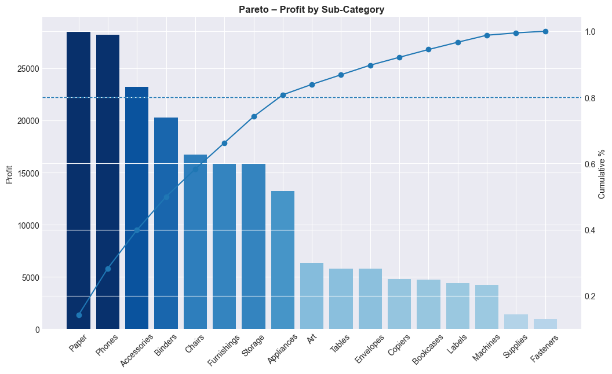
3.4 Phân tích Pareto – Danh mục con ảnh hưởng đến thua lỗ
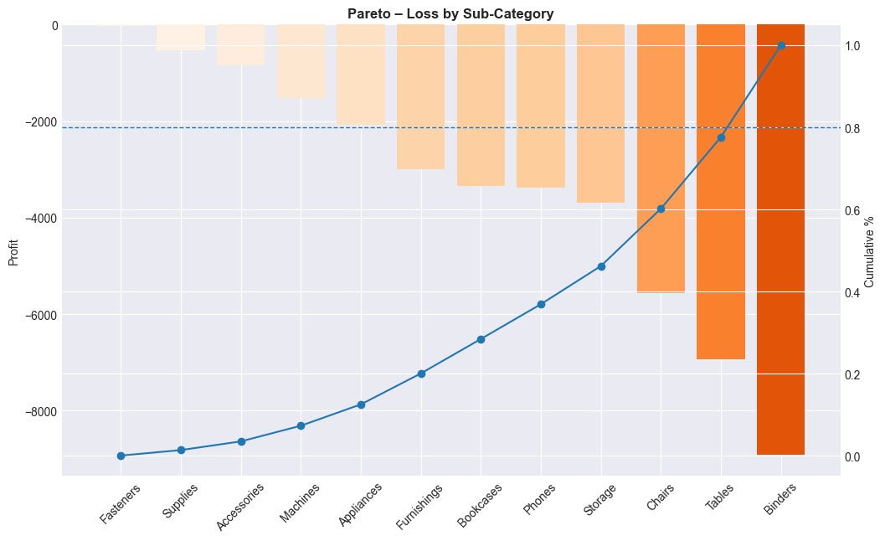
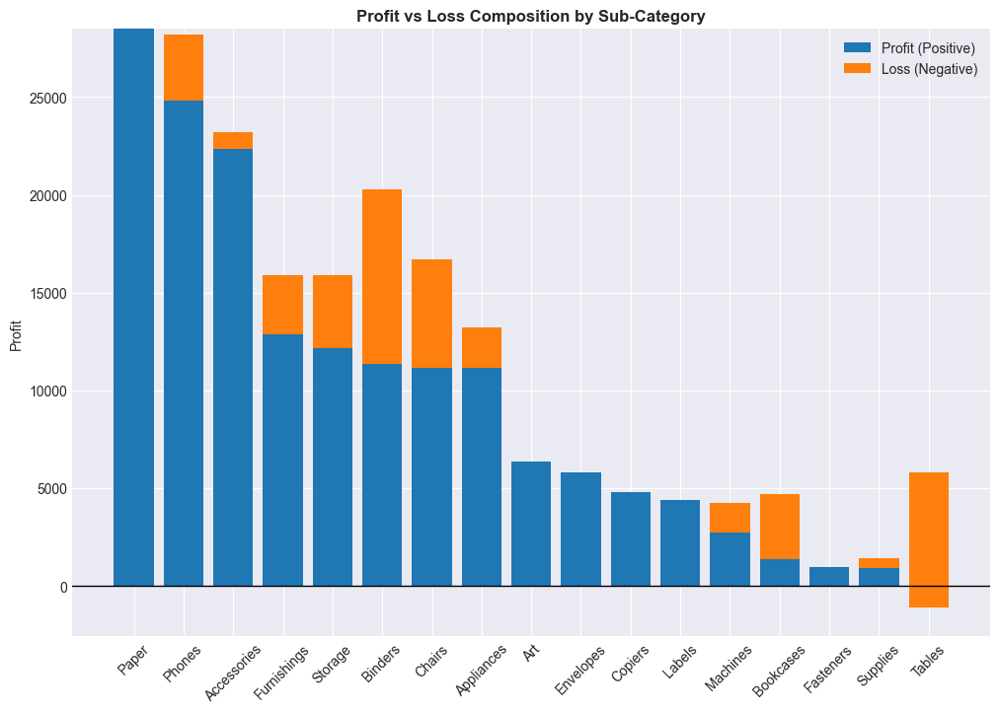
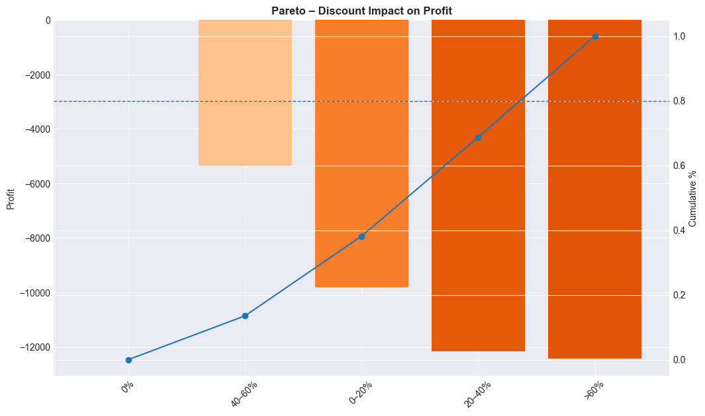
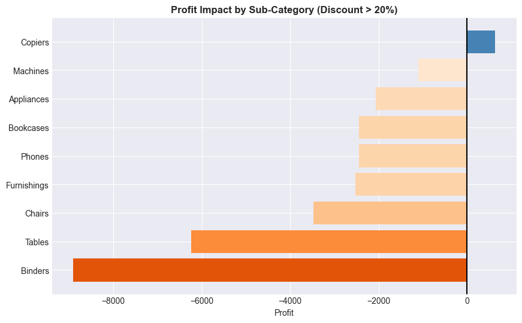
🔍 Key Insights/Phát hiện then chốt
- Phân tích Pareto cho thấy lợi nhuận phụ thuộc mạnh vào một số ít Sub-Category. Cụ thể, 7 nhóm trong số 17 (41.18%) gồm Paper, Phones, Accessories, Binders, Chairs, Furnishings và Storage tạo ra khoảng 74.18% tổng lợi nhuận. Nhóm này đóng vai trò là động lực lợi nhuận cốt lõi của doanh nghiệp.
- Thua lỗ không phân bổ đồng đều mà tập trung chủ yếu vào 11 nhóm trong số 12 (91.67%) Sub-Category, chiếm khoảng 77.61% tổng mức lỗ. Các nhóm như Fasteners, Supplies, Accessories, Machines, Appliances, Furnishings, Bookcases, Phones, Storage, Chairs và Tables là nguồn gây lỗ chính, cần được ưu tiên xử lý thay vì mở rộng doanh thu.
- Thua lỗ không phân bổ đồng đều mà tập trung chủ yếu vào 4 nhóm trong số 5 (80.00%) Discount_Bin, chiếm khoảng 68.76% tổng mức lỗ. Các nhóm như 0%, 40–60%, 0–20% và 20–40% là nguồn gây lỗ chính, cần được ưu tiên xử lý thay vì mở rộng doanh thu.
🎯 Recommendations/Khuyến nghị
- Ưu tiên đầu tư vào các nhóm sản phẩm tạo ra phần lớn lợi nhuận.
- Rà soát hoặc tái cấu trúc các nhóm sản phẩm gây thua lỗ kéo dài.
- Thiết lập ngưỡng kiểm soát chiết khấu để hạn chế tác động tiêu cực đến lợi nhuận.
PHẦN 4 – PHÂN TÍCH COHORT
Chế độ phân tích: 12 tháng gần nhất
4.1 Bảng Cohort Retention
| CohortIndex | 1 | 2 | 3 | 4 | 5 | 6 | 7 | 8 | 9 | 10 | 11 | 12 |
|---|---|---|---|---|---|---|---|---|---|---|---|---|
| CohortMonth | ||||||||||||
| 2017-01 | 100.0 | 4.5 | 11.9 | 19.4 | 13.4 | 6.0 | 13.4 | 13.4 | 23.9 | 13.4 | 23.9 | 26.9 |
| 2017-02 | 100.0 | 12.0 | 12.0 | 12.0 | 14.0 | 8.0 | 12.0 | 34.0 | 20.0 | 30.0 | 30.0 | NaN |
| 2017-03 | 100.0 | 12.9 | 14.9 | 12.9 | 14.9 | 13.9 | 26.7 | 19.8 | 26.7 | 22.8 | NaN | NaN |
| 2017-04 | 100.0 | 15.6 | 19.5 | 16.9 | 15.6 | 26.0 | 16.9 | 28.6 | 33.8 | NaN | NaN | NaN |
| 2017-05 | 100.0 | 12.7 | 14.1 | 16.9 | 23.9 | 15.5 | 36.6 | 23.9 | NaN | NaN | NaN | NaN |
| 2017-06 | 100.0 | 8.6 | 17.1 | 25.7 | 17.1 | 24.3 | 21.4 | NaN | NaN | NaN | NaN | NaN |
| 2017-07 | 100.0 | 15.6 | 20.0 | 20.0 | 22.2 | 24.4 | NaN | NaN | NaN | NaN | NaN | NaN |
| 2017-08 | 100.0 | 28.1 | 15.6 | 53.1 | 28.1 | NaN | NaN | NaN | NaN | NaN | NaN | NaN |
| 2017-09 | 100.0 | 12.7 | 23.8 | 12.7 | NaN | NaN | NaN | NaN | NaN | NaN | NaN | NaN |
| 2017-10 | 100.0 | 15.4 | 23.1 | NaN | NaN | NaN | NaN | NaN | NaN | NaN | NaN | NaN |
| 2017-11 | 100.0 | 24.4 | NaN | NaN | NaN | NaN | NaN | NaN | NaN | NaN | NaN | NaN |
| 2017-12 | 100.0 | NaN | NaN | NaN | NaN | NaN | NaN | NaN | NaN | NaN | NaN | NaN |
4.2 Biểu đồ Retention

🔍 Nhận xét
Phân tích dựa trên 12 nhóm khách hàng hình thành trong 12 tháng gần nhất cho thấy tỷ lệ giữ chân giảm mạnh ngay sau lần mua đầu tiên. Trung bình chỉ khoảng 14.8% khách hàng quay lại trong tháng thứ hai. Tỷ lệ giữ chân trung hạn (tháng 3 – 4) tiếp tục ở mức thấp, trung bình khoảng 19.1%, cho thấy phần lớn khách hàng chưa hình thành thói quen mua lặp lại. Ở dài hạn (sau 6 tháng), tỷ lệ giữ chân trung bình chỉ còn khoảng 23.4%, phản ánh thách thức trong việc xây dựng tệp khách hàng trung thành. So sánh giữa các cohort cho thấy sự khác biệt đáng kể về hiệu quả giữ chân khách hàng, trong đó cohort 2017-08 có hiệu suất tốt nhất, trong khi cohort 2017-01 có mức giữ chân thấp nhất. Điều này cho thấy trải nghiệm khách hàng và hiệu quả các hoạt động tiếp thị chưa thực sự đồng đều giữa các thời điểm.
PHẦN 5 – PHÂN TÍCH RFM
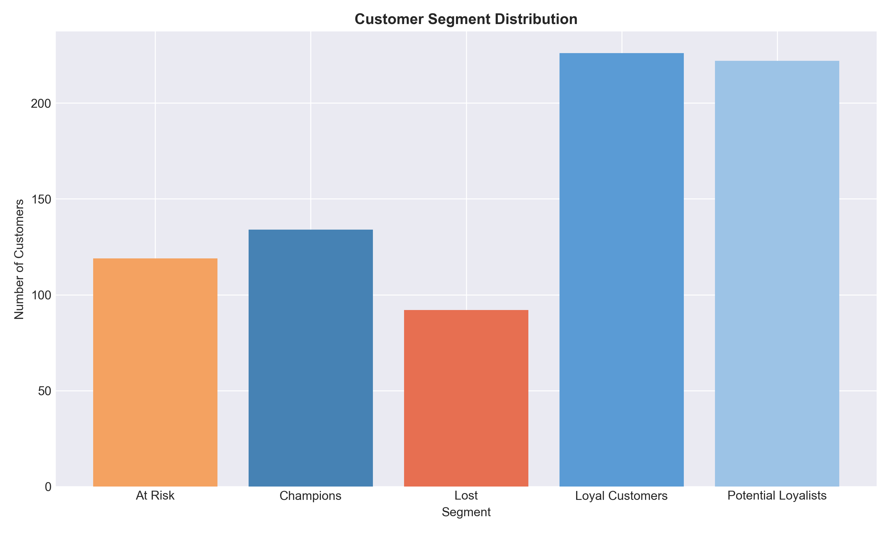
Phân tích RFM cho thấy nhóm khách hàng Loyal Customers đóng góp doanh thu lớn nhất với tỷ lệ 36.87%. Việc duy trì và mở rộng nhóm khách hàng này là yếu tố then chốt để tăng trưởng bền vững. Ngược lại, nhóm Lost có đóng góp doanh thu thấp nhất với tỷ lệ 3.71%, Nhóm này coi như là khách hàng đã mất. Nhóm At Risk có đóng góp doanh thu là 7.63% và cần được xem xét lại các chiến lược tiếp cận hoặc tái kích hoạt. Tổng thể, việc phân khúc khách hàng theo RFM cung cấp cái nhìn sâu sắc để tối ưu hóa chiến lược marketing và chăm sóc khách hàng.
| Segment | Customers | Revenue | Revenue_Percent |
|---|---|---|---|
| At Risk | 119 | 106934.12 | 7.63 |
| Champions | 134 | 422387.47 | 30.13 |
| Lost | 92 | 51962.47 | 3.71 |
| Loyal Customers | 226 | 516894.84 | 36.87 |
| Potential Loyalists | 222 | 303790.47 | 21.67 |
PHẦN 6 – DỰ BÁO & KHUYẾN NGHỊ QUẢN LÝ
Dựa trên xu hướng doanh thu trong quá khứ, dự báo cho thấy doanh thu trong 4 quý tiếp theo có xu hướng tăng khoảng 56.2%. Dự báo này mang tính định hướng và hỗ trợ lập kế hoạch trung hạn.
Tăng trưởng kỳ vọng: 56.23%
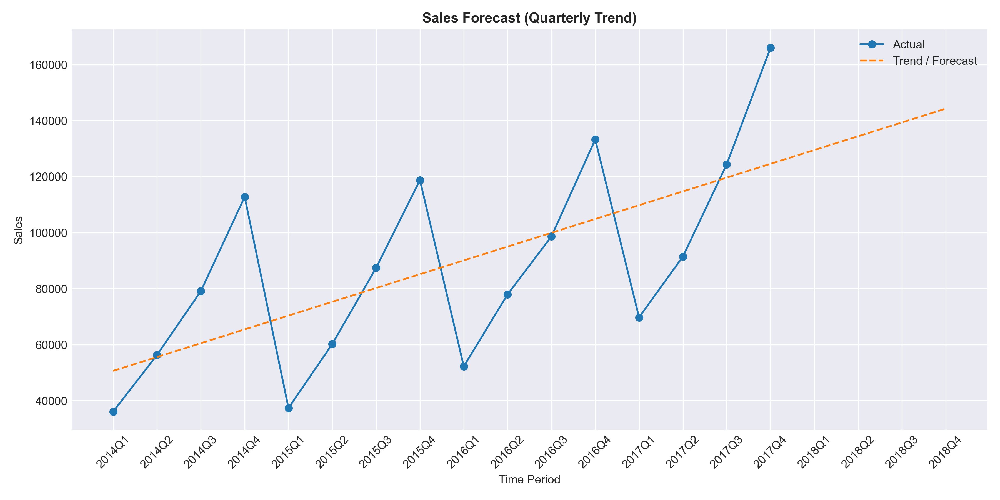
Khuyến nghị quản lý
| Ưu tiên | Chiến lược trọng tâm | Khuyến nghị | Lý do |
|---|---|---|---|
| Medium | Profitability | Tiếp tục tối ưu hoá chi phí và duy trì biên lợi nhuận hiện tại. | Hiệu quả kinh doanh nhìn chung ở mức tích cực. |
| High | Customer Strategy | Ưu tiên duy trì và mở rộng nhóm khách hàng 'Loyal Customers' thông qua các chương trình chăm sóc và giữ chân phù hợp. | Nhóm này đóng góp tỷ trọng doanh thu lớn nhất. |
| Medium | Growth | Chuẩn bị nguồn lực và kế hoạch bán hàng để tận dụng xu hướng tăng trưởng trong giai đoạn tới, đặc biệt là vào các quý 4 hàng năm. Ngoài ra, cần xem xét chính sách chiết khấu và khuyến mãi hợp lý. Cuối cùng là xem xét việc tái kích hoạt nhóm khách hàng "At Risk". | Dự báo cho thấy doanh thu có xu hướng tăng. |
| Medium | Strategic Focus | Tập trung nguồn lực vào các danh mục và phân khúc khách hàng mang lại giá trị dài hạn, thay vì mở rộng dàn trải. | Giúp tối ưu hiệu quả sử dụng nguồn lực và tăng trưởng bền vững. |